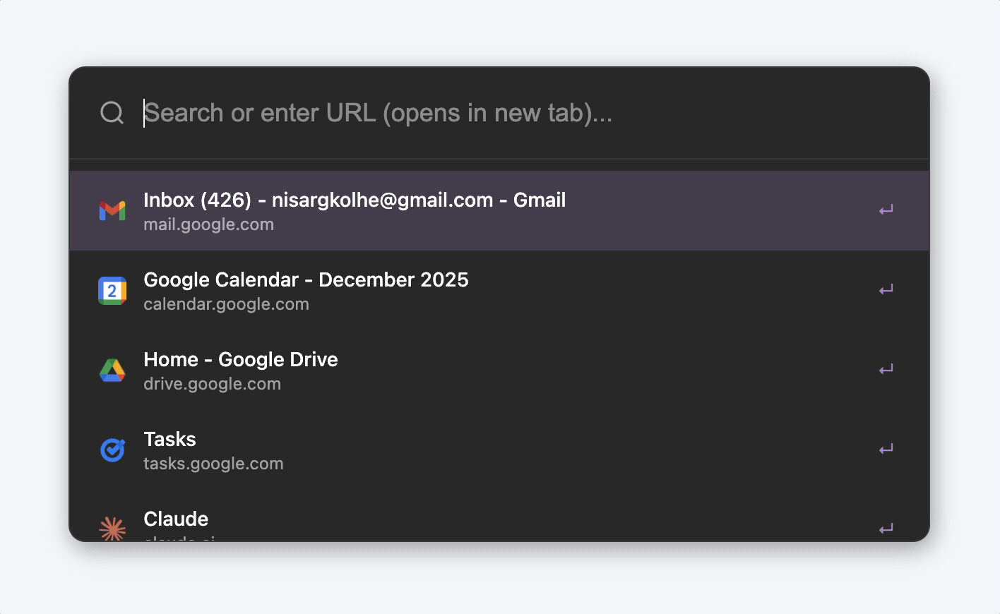
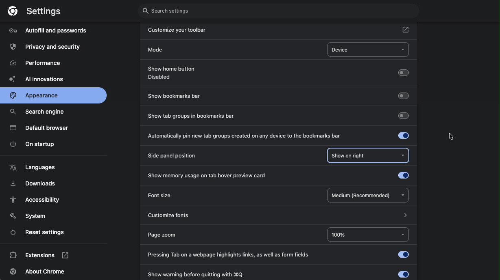

Meet Arcify Spotlight
A powerful search overlay that helps you navigate your browser faster.

What Spotlight can do:
- Search across all your open tabs instantly
- Find bookmarks and browsing history in one place
- Smart autocomplete with keyboard-first navigation
Set Up Keyboard Shortcuts
Access Spotlight instantly from anywhere with these keyboard shortcuts.

How to set up keyboard shortcuts:
- Open Chrome Extensions Keyboard Shortcuts page chrome://extensions/shortcuts
- Find Arcify Spotlight and customize the shortcuts
Recommended Shortcuts:
- 🔍 Toggle Spotlight: Alt + L
- 📑 New Tab Spotlight: Alt + T
Enhance your Experience
Get the full Arcify experience with our sidebar extension.

Arcify Sidebar
Works seamlessly with Spotlight to organize your tabs into a vertical sidebar with spaces and archiving.
- 📁 Organize tabs into Spaces
- 📦 Auto-archive inactive tabs
- 🎨 Vertical tab layout